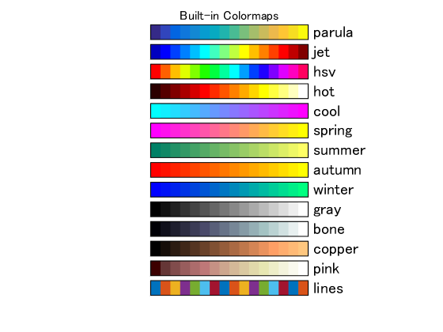

This is an example of creating a chart of built-in colormaps in MATLAB®.
Read about the colormap function in the MATLAB documentation.
For more examples, go to MATLAB Plot Gallery
% Define built-in colormaps maps = {}; if exist('parula', 'file') maps = {'parula'}; end maps = [maps 'jet', 'hsv', 'hot', 'cool', 'spring', 'summer', 'autumn', ... 'winter', 'gray', 'bone', 'copper', 'pink', 'lines']; % Number of color levels to create nLevels = 16; figure % X data points for color patches xData = [linspace(0, 15, nLevels); linspace(1, 16, nLevels); ... linspace(1, 16, nLevels); linspace(0, 15, nLevels)]; % Create each color bar for iMap = 1:length(maps) offset = 2*(length(maps) - iMap); yData = [zeros(2, nLevels); 1.5*ones(2, nLevels)] + offset; % Construct appropriate colormap. cData = feval(maps{iMap}, nLevels); % Display colormap chart patch('XData', xData, 'YData', yData, ... 'EdgeColor', 'none', ... 'FaceColor', 'flat', ... 'FaceVertexCData', cData) rectangle('Position', [0, offset, 16, 1.5], ... 'Curvature', [0 0]) text(16, offset, sprintf(' %s', maps{iMap}), ... 'VerticalAlignment', 'bottom', ... 'FontSize', 12) end axis equal off title('Built-in Colormaps')